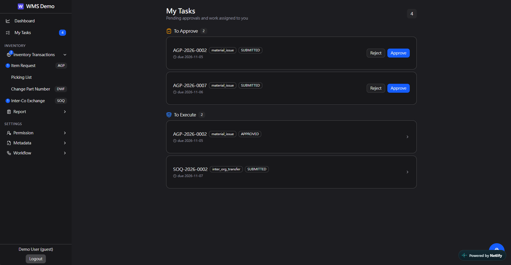
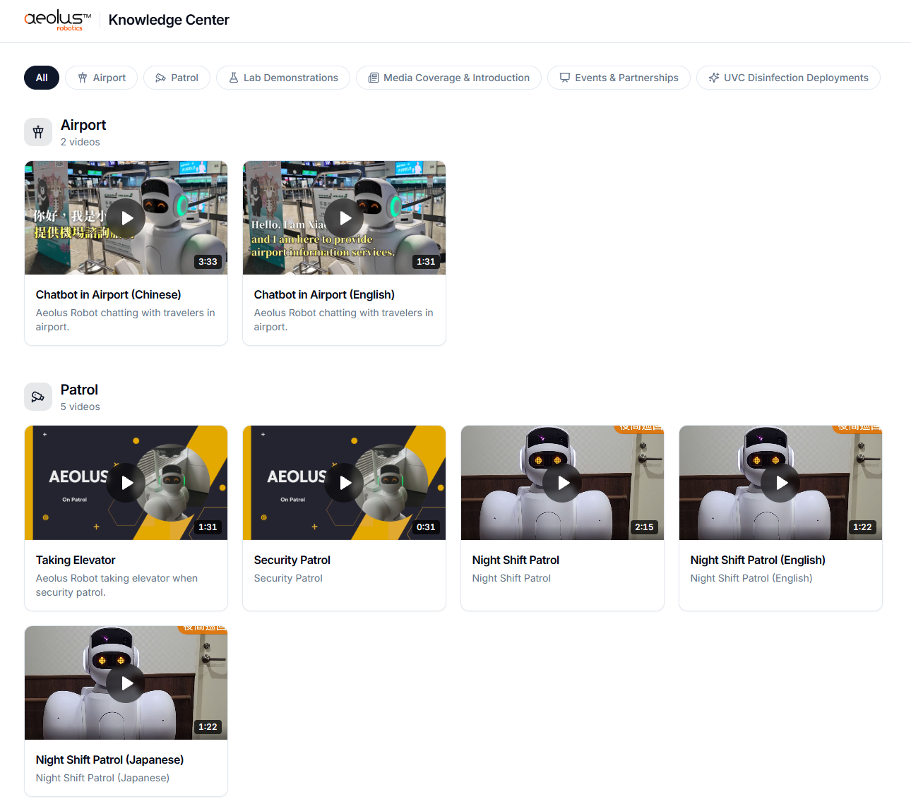
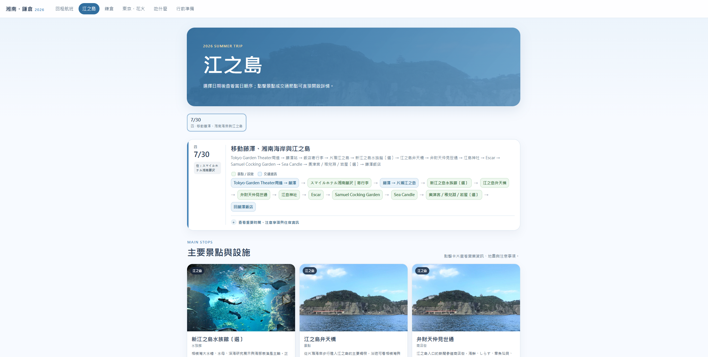

Backend & Data
GinGORMCasbin
MS SQLMariaDB / MySQLSAP HANA
TECHNICAL SKILLS
實務中使用過、用來支援主要能力的技術與工具。
SELECTED PROJECTS

PROFESSIONAL PROJECT
以 React / Next.js 建立的內部 Web System，整合使用者權限、SAP 表單申請、庫存查詢與視覺化，以及簽核流程。
PROFESSIONAL PROJECT
將製造現場的生產流程、測試資料、生產履歷與工單資訊系統化整合，並定義跨工具共用的資料介面。
此 Demo 因存取控制與獨立運行環境需求，平時不對外常駐開放；可於需要時提供展示。

PROFESSIONAL PROJECT
依業務展示需求建立可持續維護的多媒體平台，將內容更新流程與 application code 解耦。

PERSONAL PROJECT
把真實旅行中的模糊需求，透過 Systems Analysis、Information Architecture、UI/UX 與 AI-assisted Engineering 轉換為實際可使用的行程 Web App。
PERSONAL R&D · IN PROGRESS
研究將長時間日文 VTuber 影片自動轉換為日文／繁中雙語字幕的 AI pipeline，重點放在可重現評估與架構取捨。